Partner Command Center is where you run the partner program. Partner lifecycle, MDF requests and claims, campaigns and events are managed right here. Deals and contacts come from the Partner Pipeline Portal. Touch logs come from the Partner Engagement Desk. The hub links all of it, so you can click from an MDF request to the campaign it paid for to the deals that campaign touched, and back again.
Each screenshot in this manual has numbered pins. The notes under it use the same numbers. Hover or tap a pin to highlight its note, and use the magnifier in the corner to see the screenshot full size.
Every record has a page
Partners, MDF requests, campaigns, events, deals and contacts each open on their own page, with their own link you can bookmark or share.
Colour tells you what a link is
amber MDF and events, plum campaigns, teal deals and pipeline. A ↗ arrow means the link opens another tool in a new tab.
Examples are labelled
Records tagged example are sample data so you can see how everything connects. Your real program replaces them.
Chapter 02
How it fits together
Attribution in the hub rests on one idea: a touch. A touch is a dated record that a deal was reached by an event, a campaign or an MDF-funded activity. Each touch traces back through the chain below, so the deal’s value can be credited to the campaign and the MDF that paid for it.
Where things live
The hub owns the program records. Deals, contacts and touch cadence still come from the two source tools. The table shows where to make each kind of change.
What
Change it in
What the hub adds
Partner lifecycle, tier, MDF requests, approvals and claims, campaigns, joint messaging, events and run sheets, co-branded content, shared accounts, leads and deal registrations
The hub
Everything, end to end. Channel Alignment is no longer needed
Deals, amounts, close dates, partner contacts
Pipeline Portal
Touches on each deal, sourced or influenced, credit by model; Board, Forecast and Engagement tabs; the partner contact map
Touch cadence and the monthly partner brief
Engagement Desk
Engagement scores that combine Desk and Portal activity
Changes made in the Pipeline Portal and Engagement Desk don’t flow into the hub automatically, and changes in the hub don’t flow back. When the source tools have moved on, ask Claude in this project to refresh the hub’s copy.
Chapter 03
Getting around
Home is your starting point every morning. The side rail takes you to each area. Search reaches any single record in a couple of keystrokes.
Finds partners, deals, MDF requests, campaigns, events and contacts as you type. Press / from anywhere to jump here.
2
Side rail
The main views. The grey number is how many records each holds. The amber badge on Attribution counts open deals that have no marketing touch yet.
3
Program numbers
MDF committed against what was allocated, campaign count, pipeline with a marketing touch, and pipeline earned per MDF dollar against your target. Each tile opens the page behind it.
4
Needs attention
Your work queue, most urgent first. The stripe tells you why: red for a passed close date, amber for a decision waiting on you (an MDF request, a claim, an overdue event task), teal for housekeeping such as linking MDF or a partner ready to advance. Approve and Advance act right here; other buttons open the record.
5
Partners
Every partner with tier, lifecycle stage, type and region, sorted by open pipeline. Click a name to open the partner page.
6
Source tools
One-click links to the Pipeline Portal and the Engagement Desk, where deals and contacts come from. Program settings, top right, holds the MDF pool, return target, vendor name, brand voice and colors.
7
Partner account
Type a partner name to view only that account across the whole hub. See Focus on one partner.
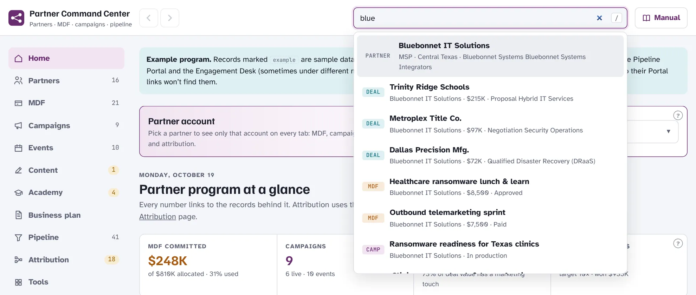
Figure 2 Search: type a few letters, then pick a result Open this view ↗
1
Type to search
Matches names, partner names, products and stages. Here, “blue” finds the partner and every deal and MDF line tied to it.
2
Results by type
The tag on the left says what each result is. Use ↑↓ to move, Enter to open, Esc to close.
Keyboard
/ jump to search
↑↓ move through results
Enter open, Esc close
Alt+Shift+↑/↓ move a tab
Tab reaches every control, with a visible focus ring
Links you can share
Every page has its own address. Copy it from the address bar to send someone straight to a partner, a deal or the Attribution page. They need access to the hub to open it.
Back works
Breadcrumbs at the top of each page lead back up, and the browser’s Back button returns you to where you were.
Swipe sideways to reach every view. Everything else stacks into one column.
2
Numbers stack two by two
Tables scroll sideways inside their own panel, so the page itself never does.
Rearrange the tabs
Put the areas you use most at the top. Press and hold a tab in the side rail (on a phone, the row of tabs across the top) until it lifts, then drag it to its new place and let go. A quick click still just opens the tab, and Esc while dragging puts it back.
With the keyboard, move to a tab and press Alt + Shift + ↑ or ↓. Your order is saved for you alone and follows you to other devices; Reset tab order under the tabs restores the original.
Focus on one partner
When you’re working one account, pick it in the Partner account box on Home. Every tab then shows only that partner’s MDF, campaigns, events, content, deals, contacts and attribution, until you clear it.
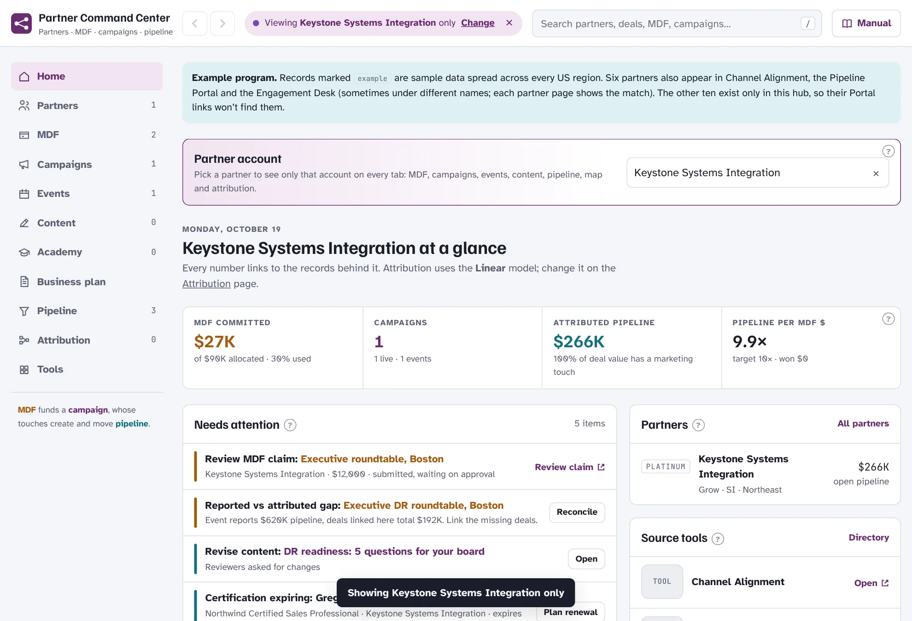
Figure 4 Focused on one partner: every tab shows Keystone only Open this view ↗
1
Who you’re viewing
This chip stays at the top of every page while a partner is selected. Change picks another partner; ✕ shows all partners again.
2
Partner account picker
Click and type any part of a partner’s name. The list is A–Z and also matches the names used in the Pipeline Portal and Engagement Desk.
3
Numbers for that partner
Home, MDF, campaigns, events, content, pipeline, the map and attribution all recalculate for the selected partner.
4
Counts follow the focus
The numbers in the side rail count only that partner’s records.
How to Focus the hub on one partner account Go there ↗
Go to Home and click the Partner account box.
Start typing the partner’s name, then pick it with a click or Enter.
Every tab now shows only that partner. The chip at the top says who you’re viewing on every page.
Select ✕ on the chip, or pick All partners, to see the whole program again. The hub remembers your choice in this browser.
Chapter 04
Partners
Partners has two tabs. List shows every partner with tier, lifecycle progress, MDF used, open pipeline, attributed pipeline and the pipeline they reported. Click a column heading to sort by it, or open a partner for the full picture. Map shows every partner contact by city.
Name, type, tier, region, starting stage and MDF allocation. The new partner opens straight away.
2
Stage counts
How many partners sit in each stage. Click one to filter the table; click it again to clear.
3
Ready to advance
Partners whose current stage checklist is complete. They also appear on Home under Needs attention.
4
Lifecycle column
Stage, a ready tag when they can advance, and a bar for how much of the 20-item journey is done.
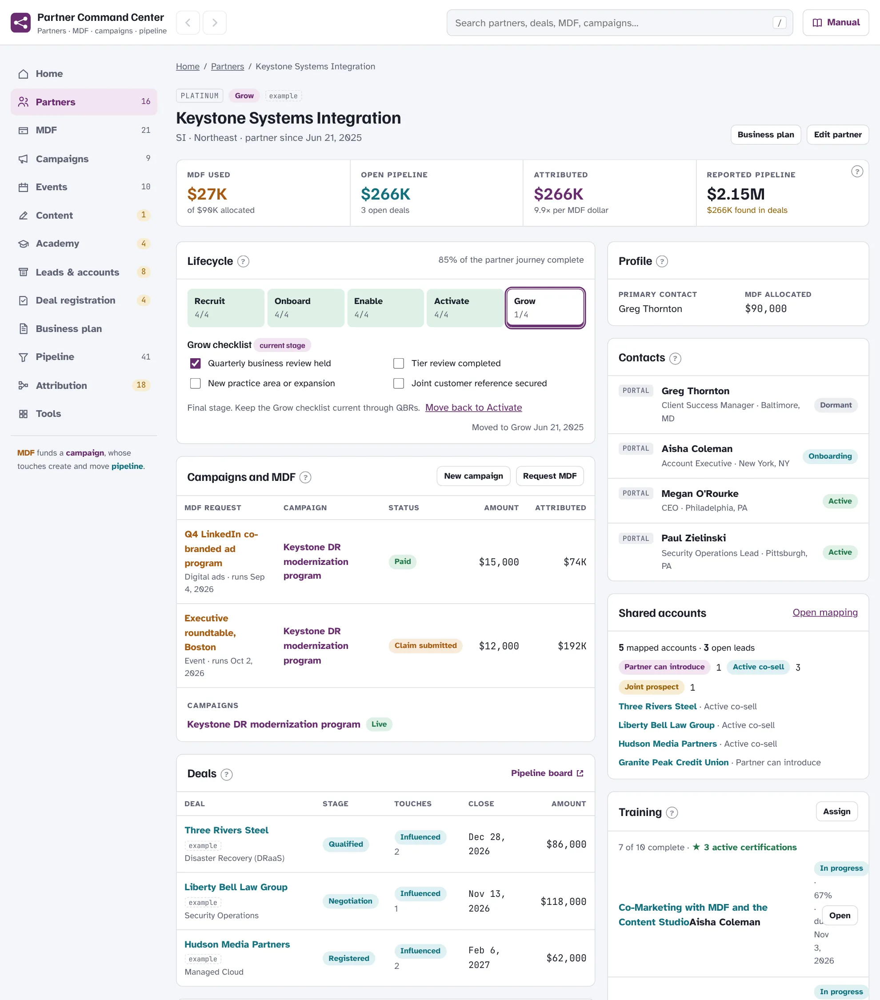
Figure 6 A partner page: Keystone Systems Integration Open this view ↗
1
Breadcrumbs
Shows where you are. Each step is a link back up. The browser Back button also works.
2
Business plan and Edit partner
Edit partner changes the name, type, tier, region, primary contact, MDF allocation, reported pipeline and notes. It also holds Delete partner; their deals, MDF and contacts stay on file.
3
Partner numbers
MDF used against allocation, open pipeline, pipeline credited to marketing, and the pipeline the partner reported. When reported and actual deals differ by more than a quarter, the gap shows in amber.
4
Lifecycle
Five stages with four checklist items each. See Lifecycle below.
5
Campaigns and MDF
Every MDF request for this partner, the campaign it funds, its status and the pipeline it earned. New campaign and Request MDF start one with this partner already filled in. The Deals, Content and Events panels sit underneath; Plan an event is on the Events panel.
6
Profile
Primary contact, MDF allocation and notes. Below it: contacts from the Portal and Desk, training progress, and the name this partner uses in the other tools.
Lifecycle
Every partner moves through Recruit, Onboard, Enable, Activate and Grow. Each stage has four checklist items, from a signed NDA to a joint customer reference.
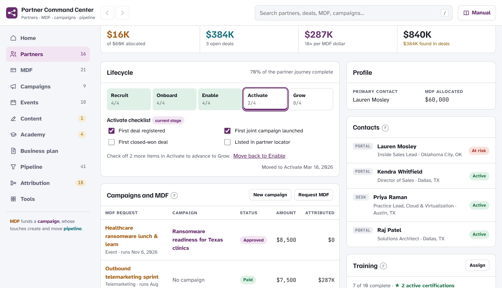
Figure 7 Lifecycle: Bluebonnet is two items from Grow Open this view ↗
1
Stages
Green stages are finished, the outlined one is current. Each shows items done out of four. Click any stage to see its checklist.
2
Checklist
Tick an item when it’s done. It saves straight away; untick to undo.
3
Advance
When every item in the current stage is ticked, Advance to … appears. Move back undoes a move. The date of the last move shows on the right.
How to Move a partner to the next lifecycle stage Go there ↗
Open the partner. The Lifecycle panel shows the current stage’s checklist.
Tick each item as it’s done. Each tick saves on its own.
When all four are ticked, select Advance to …. The partner moves on and the next checklist appears.
The Partners section has two tabs. The Map tab brings over the Pipeline Portal’s contact map.
2
Filters
Search names, titles, deals and cities; type a partner name to find it; narrow by state, contact status, or whether the contact has open deals. Numbers in each list show what that choice would leave. Clear filters resets everything.
3
Partner type
Each chip turns a type on or off. Pin colours match the chips.
4
Moving around
Use + and −, scroll to zoom, drag to pan, and ⤢ to reset. Click a state to filter to it and zoom in; click it again to clear.
5
Legend
Partner types with how many contacts of each are in view. Faded pins are contacts with no open deals.
6
Contacts
The contacts in view, A–Z by last name, with open pipeline and city. Hover a row to light up its pin; click a row or a pin to open the contact record.
Open pipeline, closed-won value and days since the last touch.
2
Deals
Each deal this contact registered, by stage. Click one to open it. + New deal opens the Pipeline Portal, where deals are created.
3
Contact details
Email and phone with Copy buttons, and location.
4
Account
The partner, its website and tier, and the partner’s other contacts. Click a name to switch to that contact.
5
Recent activity
The latest calls, emails and meetings logged for this contact, including planned ones.
6
Quick actions
Show on map zooms to the contact. View pipeline filters the pipeline to this partner. Log touchpoint opens Engagement with the contact already chosen. Full contact page opens the contact’s own page.
7
Territory
The states this contact covers, filled in the partner-type colour and labelled. If the contact is based outside their territory, their home state is hatched. The same states are shaded on the main map while the record is open. Edit to change them.
Upload a CSV or paste rows copied from a spreadsheet. Copy a template header gives you the column names to start from.
2
Match columns
The hub guesses each column from its name. Fix any it got wrong. Full name, or first and last name, plus a partner are required.
3
Rules
Choose a partner for rows whose partner name doesn’t match, and whether to skip or update contacts that already exist (matched by email, or by name and partner).
4
Check every row
New, update, skip or the reason a row can’t be imported. Amber notes flag rows that will sit at the state centre because the city isn’t on the map.
5
Import
Saves the contacts. They appear on the map and in the contact list straight away.
Open Partners → Map and select Import list in the Contacts panel.
Choose a CSV file, or paste rows from a spreadsheet and select Read pasted rows.
Check the column matches. Pick a partner for unmatched rows, and choose whether existing contacts are skipped or updated.
Read the row-by-row check, then select Import. A summary shows how many were added, updated and skipped.
Chapter 05
Leads and accounts
Leads & accounts is where you and your partners map the companies you share, decide who leads each one, and route leads between you. It has five tabs: Account mapping, Accounts, Leads, Import and CRM connections.
Every account records your own relationship (customer, open opportunity, prospect or not engaged) and each mapped partner’s. Comparing the two gives the overlap, which tells you the move to make.
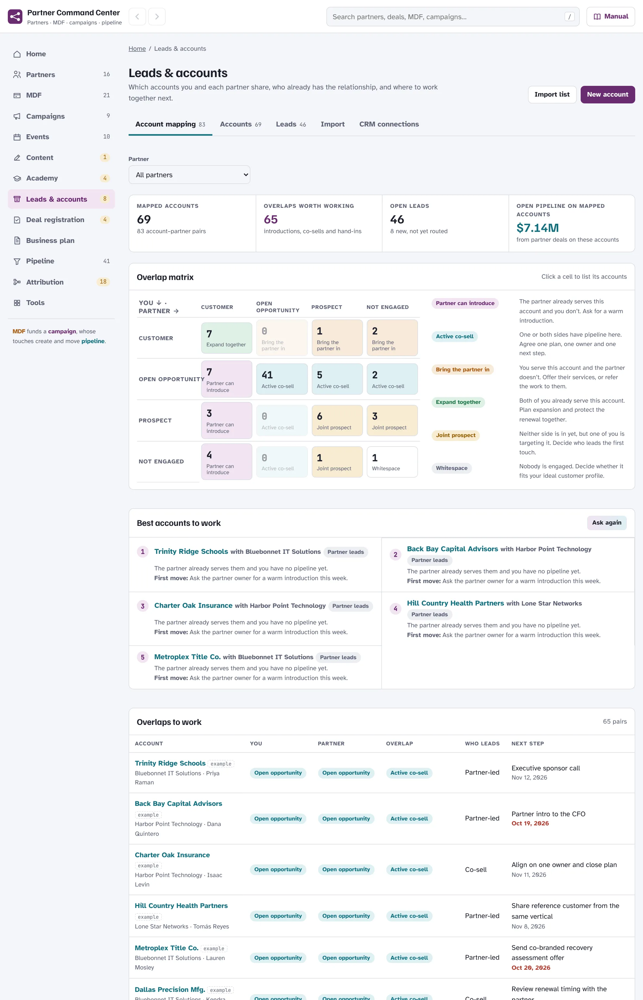
Figure 11 Account mapping: where you and your partners overlap Open this view ↗
1
Partner
Look at one partner’s overlaps, or all of them. Focusing the hub on a partner sets this for you.
2
The numbers
Accounts with at least one partner mapped, overlaps worth working (introductions, co-sells and hand-ins), open leads, and open partner pipeline on mapped accounts.
3
Overlap matrix
Rows are your relationship with the account, columns are the partner’s. Each cell counts account–partner pairs and is coloured by what to do about them. Click a cell to list its accounts below; click again to clear.
4
What each overlap means
Partner can introduce, Active co-sell, Bring the partner in, Expand together, Joint prospect and Whitespace, with the move each one calls for.
5
Best accounts to work
Suggest with AI reads the overlaps, pipeline, leads and next steps and picks five pairs worth your time this week, each with a first move. It only uses the facts in the hub.
6
Overlaps to work
Introductions, co-sells and hand-ins by default, or the cell you clicked. Sort by any column; overdue next steps are red.
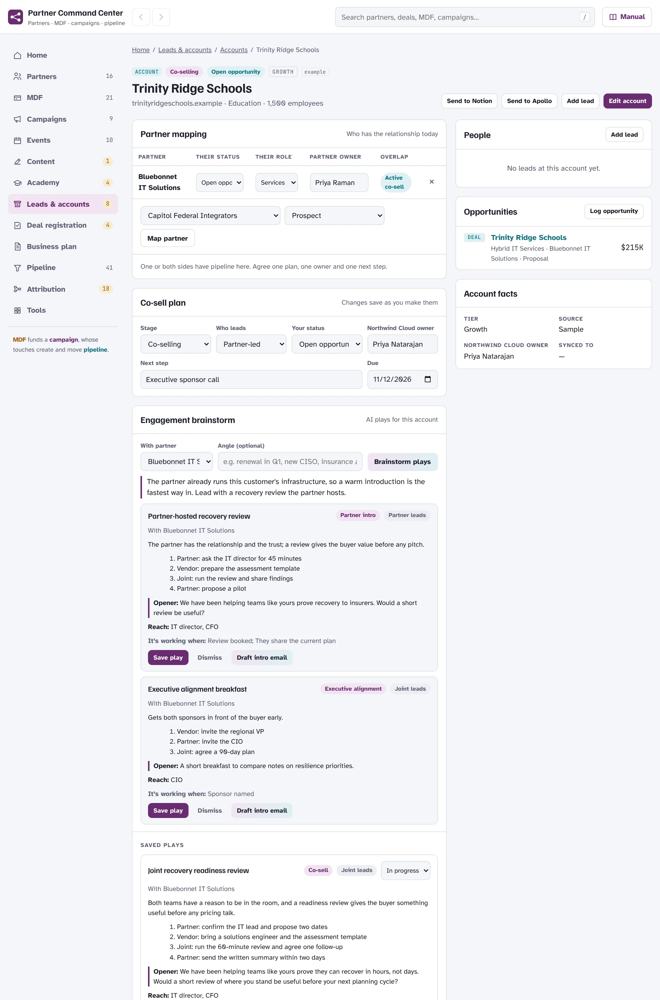
Figure 12 An account: who has the relationship, and the plan Open this view ↗
1
Account actions
Send to Notion or Send to Apollo copies it to your CRM, Add lead adds a person here, Edit account changes the details or deletes it.
2
Partner mapping
Each partner’s relationship with the account (customer, open opportunity, prospect or not engaged), their role and their rep. Changes save straight away and the overlap updates. Add another partner underneath.
3
Co-sell plan
Stage, who leads, your own status and owner, and the next step with a due date. Saves as you change each field.
4
Engagement brainstorm
Pick a partner and an optional angle, then Brainstorm plays. Each play says who leads, why, first steps with owners, an opener, who to reach and signs it’s working. Save the good ones, track their status, and draft an intro email from any play.
5
People
Leads at this account with their status. Add one here and it’s linked automatically.
6
Opportunities
Partner deals on this account. Log opportunity adds one straight into Pipeline.
New, assigned, accepted, working, qualified, converted. Declined and disqualified leads keep their reason in the history.
2
Hand-off
The buttons change with the step: assign to a partner, record their answer, start working, mark qualified, then Convert to opportunity, which creates the pipeline deal. Next step and due date save as you type.
3
Partner hand-off note
Draft with AI writes a short note for the partner rep: who, why now, what you know, the suggested first move. Copy it into an email.
4
History
Every routing step, with who did it and any reason given.
5
Account
The lead’s account and how the assigned partner relates to it. If the partner isn’t mapped yet, map them in one click.
How to Route a lead to a partner and follow it through Go there ↗
Open the lead. Under Hand-off, choose the partner and select Assign to partner.
Optionally select Draft with AI under Partner hand-off note and send it to the partner rep.
The partner accepts or declines in the portal. If they tell you directly, record it with Partner accepted or Partner declined.
Move it to Working and Qualified, then Convert to opportunity to create the pipeline deal.
Importing
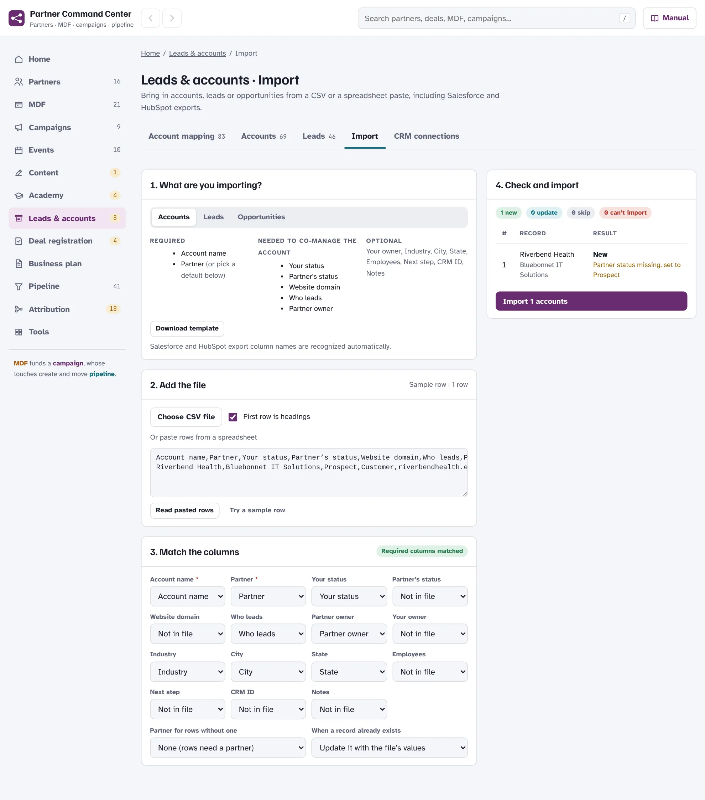
Figure 14 Importing accounts, leads or opportunities Open this view ↗
1
What you’re importing
Accounts, leads or opportunities. The required fields, the fields needed to co-manage the account, and the optional ones are listed for each. Download a template to start from.
2
Add the file
Choose a CSV, or paste rows from a spreadsheet. Salesforce and HubSpot export column names are recognized.
3
Match the columns
Each hub field shows the column it was matched to; change any of them. Pick a default partner for rows without one, and whether existing records are updated or skipped.
4
Check and import
Every row says New, Update, Skip or why it can’t be imported, with warnings such as a new account being created. Nothing is saved until you select Import.
How to Import a list from Salesforce, HubSpot or a spreadsheet Go there ↗
Open Leads & accounts → Import and choose Accounts, Leads or Opportunities.
Choose the CSV file, or paste the rows and select Read pasted rows.
Check the column matches, pick a default partner if the file has no partner column, and choose update or skip for existing records.
Read the row check, fix anything marked red in the file if needed, then select Import.
CRM connections
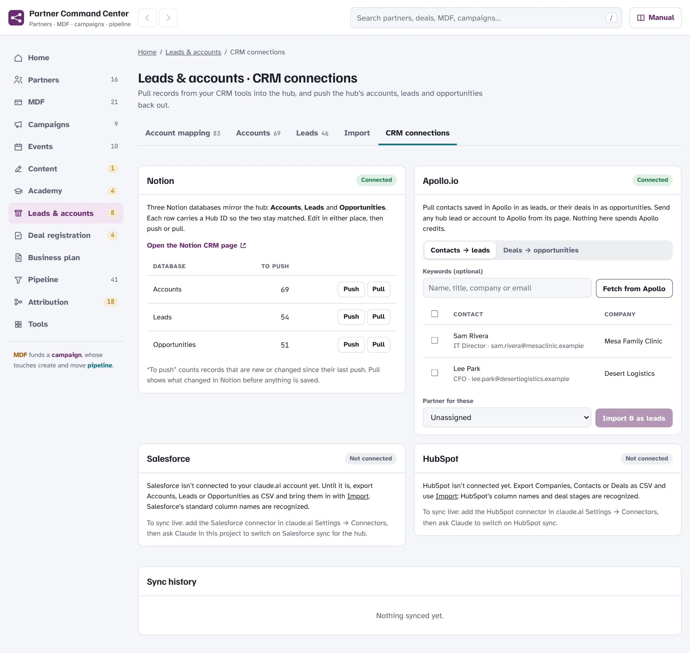
Figure 15 CRM connections: Notion, Apollo.io, Salesforce and HubSpot Open this view ↗
1
Notion
Three Notion databases mirror the hub. Push sends new and changed records; Pull lists what changed in Notion and saves only what you tick. Rows added in Notion come in as new records.
2
Apollo.io
Fetch contacts saved in Apollo as leads, or Apollo deals as opportunities, pick a partner and import. Send any lead or account to Apollo from its page. No Apollo credits are used.
3
Salesforce and HubSpot
Not connected yet. Import their CSV exports meanwhile. Once a connector is added in claude.ai, ask Claude to switch on live sync.
Select Push next to Accounts, Leads or Opportunities to send new and changed records. The first time, choose Allow when claude.ai asks.
After editing in Notion, select Pull. Review the list of changes and untick any you don’t want.
Select Apply. Rows added in Notion become new hub records, and their Hub ID is written back.
How to Bring Apollo contacts in as leads Go there ↗
On CRM connections, choose Contacts → leads and add keywords if you want to narrow it down.
Select Fetch from Apollo. Contacts already in the hub are greyed out.
Tick the ones to bring in and choose the partner to route them to (or leave them unassigned).
Select Import. Their companies become accounts mapped to that partner.
Note
Connections run with your own claude.ai connectors and ask your permission the first time. Notion and Apollo.io are connected today. Salesforce and HubSpot need their connectors added in claude.ai Settings → Connectors first; until then, use their CSV exports with Import.
Chapter 06
Deal registration
Partners register the deals they find so they’re protected from channel conflict, and accept or decline the leads you send them. Both happen in the partner portal; you review, decide and track in the hub.
Open the partner portal shows what partners see. Register for a partner enters one they sent by email or phone.
2
Tabs
Review queue, Approved (under protection, soonest expiry first), every registration, and Lead acceptance.
3
The numbers
Waiting on you, conflicts in the queue, registered pipeline under protection, and how quickly you decide.
4
Registrations
Oldest first. The Check column flags conflicts at a glance.
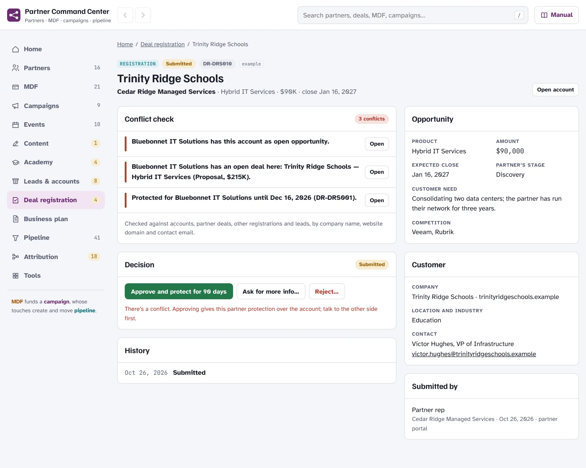
Figure 17 A registration with a channel conflict Open this view ↗
1
Conflict check
Run automatically against accounts, partner deals, other registrations and leads, by name, website and contact email. Red is a real conflict, amber a flag, grey for information.
2
Decision
Approve protects the partner for the set number of days, maps them to the account and creates the pipeline deal. Ask for more info sends a question back through the portal. Reject needs a reason the partner will see. Approved ones can be extended or revoked.
3
Opportunity
What the partner told you: product, amount, close date, their stage, the customer’s need and the competition.
4
Submitted by
Who submitted it, when, and whether it came through the portal or from a lead.
Open it from Deal registration or from Needs attention on Home.
Read the Conflict check. Open anything red and talk to the other side first.
Select Approve, Ask for more info or Reject. The partner sees your note in the portal.
Before protection ends, select Extend protection if the deal is still moving.
The partner portal
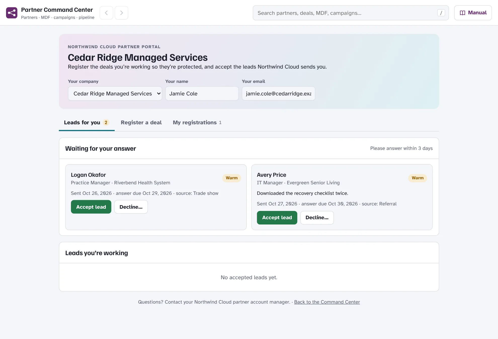
Figure 18 The partner portal: leads waiting for an answer Open this view ↗
1
Who’s using it
The partner picks their company and enters their name and email once; this browser remembers them.
2
Sections
Leads for you, Register a deal, and My registrations with each one’s status.
3
A lead to answer
Accept takes it on; Decline asks for a short reason. The answer is due within the window you set.
4
Leads they’re working
Accepted leads, each with Register a deal to start a registration already filled in.
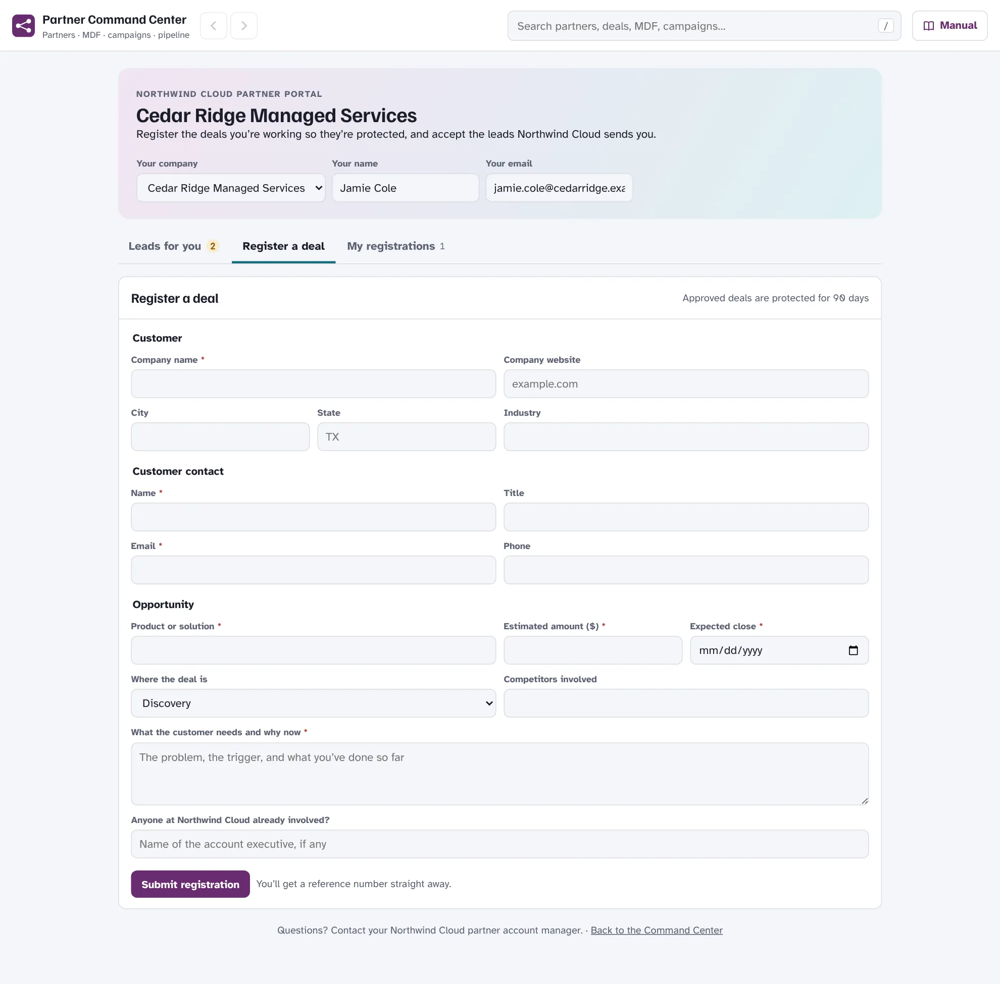
Figure 19 The partner portal: registering a deal Open this view ↗
1
Customer
Company name is required; the website makes conflict checks more accurate.
2
Opportunity
Product, amount, expected close and the customer’s need are required. If you already have activity on the account, the partner sees a gentle heads-up before submitting.
3
Submit
They get a reference number straight away and can follow the decision under My registrations.
Share the hub with the partner from its Share menu on claude.ai.
Send them to the portal link (the hub address ending in #portal).
They pick their company, add their name and email, then accept leads and register deals.
Set the response window and protection period in Program settings.
Note
Partners don’t have their own login. Anyone you share the hub with can open the portal and choose a company, so share it only with partner contacts you trust. Per-partner sign-in needs a system such as Salesforce Experience Cloud.
Leads waiting on partners and how many are past the window, acceptance rate and median time to accept over 90 days, and new leads not yet routed.
2
Waiting for an answer
Oldest first, with the due date. Record an answer the partner gave you by phone, or Copy nudge for a ready-made reminder.
3
By partner
Sent, accepted, declined and waiting per partner, with acceptance rate and average time to accept.
Chapter 07
MDF
Every market development fund request, from the partner’s ask through approval, claim and payment, the campaign it pays for, and what it returned.
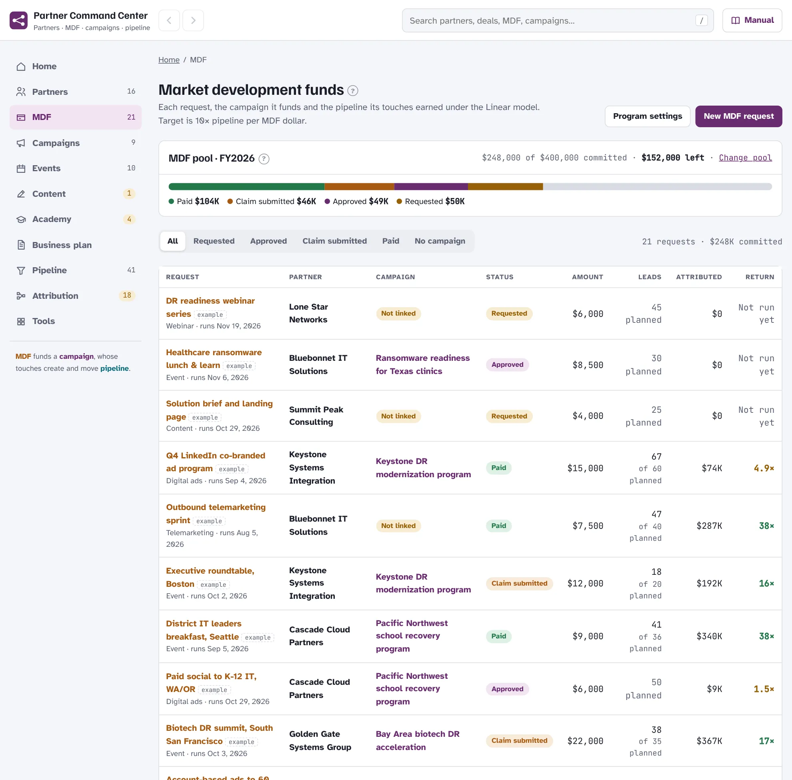
Figure 21 MDF: every request and what it returned Open this view ↗
1
New MDF request and Program settings
New MDF request records a partner’s ask: partner, activity, type, amount, run date, expected leads, and optionally the campaign and event it pays for. Program settings sets the pool size and fiscal year.
2
MDF pool
How much of this year’s pool is paid, claimed, approved and requested, and what’s left. Red means over-committed.
3
Filter
Show all requests, one status, or No campaign to find funds that aren’t tied to a campaign yet.
4
Attributed
Pipeline credited to this request under the model chosen on the Attribution page.
5
Return
Attributed pipeline divided by the amount. Green means at or above your target, amber means below. “Not run yet” marks requests that haven’t happened.
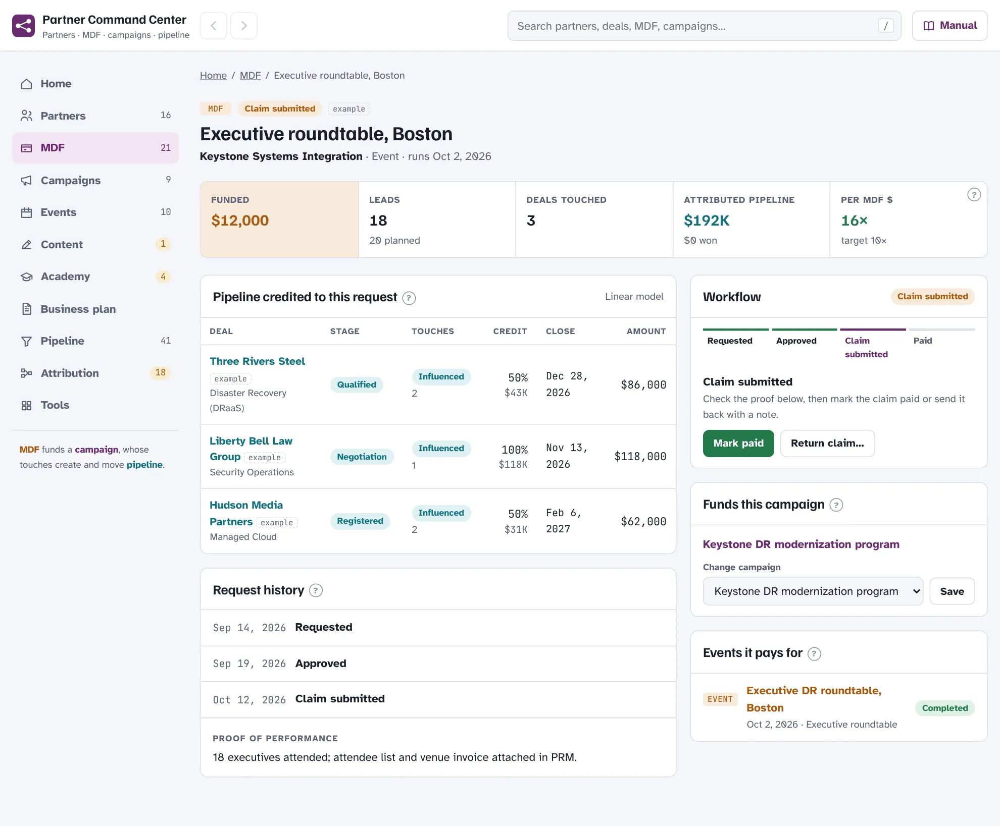
Figure 22 One MDF request: a claim waiting to be paid Open this view ↗
1
The chain, left to right
What was funded, the leads it produced, the deals it touched, the pipeline it earned and the return per dollar.
2
Workflow
Where the request sits: Requested, Approved, Claim submitted, Paid. The buttons change with the step. See Decide, claim and pay.
3
Request history
Every step with its date, plus the reason for any rejection or returned claim. Proof of performance shows underneath once a claim is in.
4
Pipeline credited to this request
Each deal it touched, the share of credit it earned on that deal, and the dollar value of that share.
5
Funds this campaign
Pick the campaign this money pays for and select Save. The request’s touches then count toward that campaign too.
How to Decide on an MDF request, then claim and pay it Go there ↗
Open the request from MDF or from Needs attention on Home. (Home also has an Approve button for quick yeses.)
Select Approve, or Reject… and give a reason. The reason is kept in the request history.
After the activity runs, select Submit claim… and enter the actual leads and what proof the partner sent. Both are required.
Check the proof, then select Mark paid, or Return claim… with a note to send it back to Approved.
How to Link an MDF request to a campaign Go there ↗
Open MDF in the side rail and select the No campaign filter.
Click the request’s name to open it.
Under Funds this campaign, choose the campaign from the list.
Select Save. A confirmation appears at the bottom of the screen, and the request’s touches now count toward that campaign.
If the partner has no campaigns yet, select Create one right under the list.
Chapter 08
Campaigns and events
A campaign’s spend is the total of the MDF requests linked to it. Its pipeline is the credit earned by every touch that traces back to it, including touches on its events.
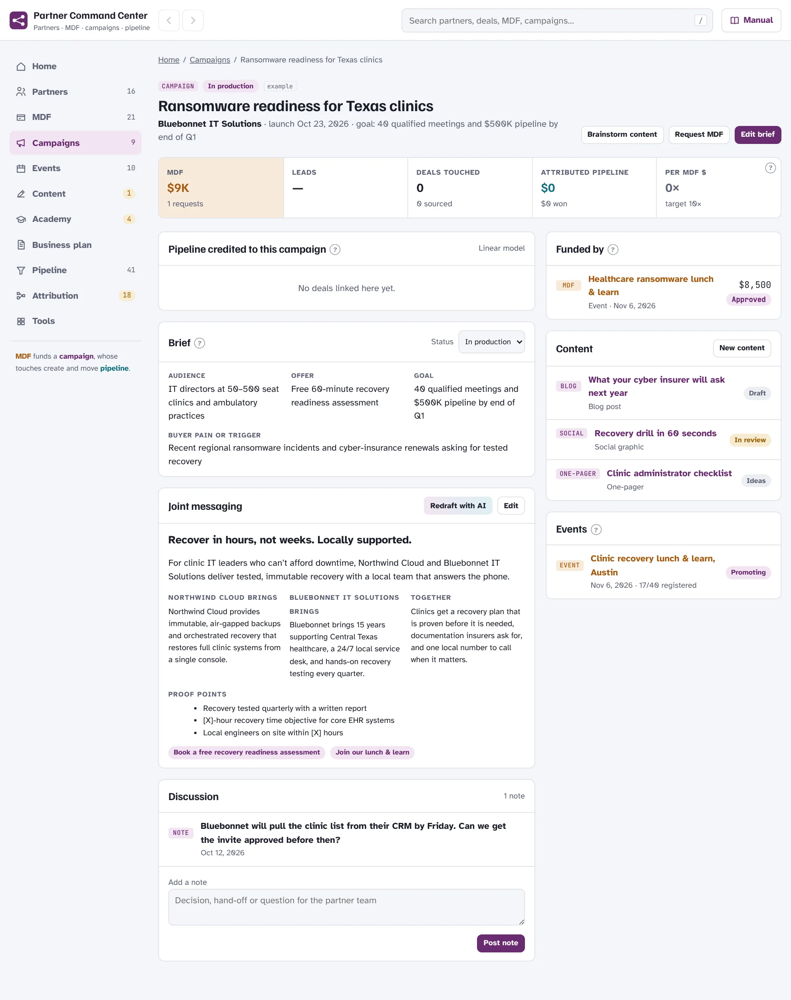
Figure 23 A campaign: Ransomware readiness for Texas clinics Open this view ↗
1
Campaign actions
Brainstorm content opens the content studio, Request MDF starts a request already tied to this campaign, and Edit brief changes the name, partner, status, launch date, goal, audience, offer and buyer pain, or deletes the campaign.
2
Campaign chain
Campaign spend is the total of the MDF requests linked to it. Pipeline and return follow from the deals its touches reached.
3
Brief
What the campaign is for. Change its status from the menu in the corner.
4
Joint messaging
Positioning, tagline, what each side brings, proof points and calls to action. Draft with AI writes it from the brief; Edit lets you change any line. AI never invents numbers: replace [X] placeholders before anything ships.
5
Discussion
Decisions and hand-offs with the partner team, newest last. Type a note and select Post note.
6
Funded by
The MDF requests behind the campaign, with amount and status. Content and Events panels sit underneath.
How to Start a campaign and draft its joint messaging Go there ↗
Select New campaign on Campaigns, or on the partner’s page so the partner is filled in.
Give it a name and partner. Add the goal, audience, offer and buyer pain; the AI uses all of them.
Select Create. On the campaign page, select Draft with AI under Joint messaging.
Select Edit to fix any line and replace [X] placeholders, then set the status from the Brief panel as work moves on.
Events
Events has two tabs: Upcoming, soonest first, and Past, most recent first. Every event page carries a run sheet, results, funding and an AI-drafted plan.
Name, partner, format, date, time, venue, budget, status, campaign and MDF. Changing the date moves every run-sheet due date with it.
2
Run sheet
Fourteen steps from six weeks out to two weeks after, grouped before, on the day and follow-up. Tick each one off. Red dates are overdue and also show on Home. Click the owner tag to switch between the partner and you.
3
Add a task
Anything the standard list doesn’t cover: give it a name, a due date and an owner.
4
Results
Registrations against target, show rate, leads and cost per lead, opportunities and reported pipeline.
5
Budget and funding
The MDF request and campaign behind the event. If either is missing, Request MDF for this event or Create promotion campaign opens a form with the event’s details filled in.
6
Agenda and promotion
The run of show, the promotion schedule and logistics notes. Draft with AI writes the first two; edit any box and click away to save. Download plan saves everything, run sheet included, as a Markdown file.
How to Plan an event from start to finish Go there ↗
Select New event on Events (or Plan an event on a partner page). Fill in the name, partner and date, then Create.
On the event page, select Request MDF for this event and Create promotion campaign. Both forms arrive filled in.
Select Draft with AI for the agenda and promotion plan, and add logistics notes.
Work the run sheet week by week. Overdue steps show in red here and on Home.
Afterwards, select Update results, then link the deals it produced (see close a gap).
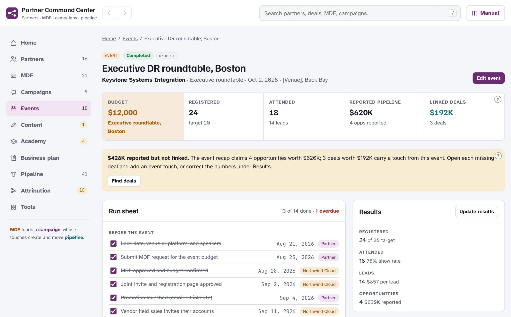
Figure 26 An event: checking reported pipeline against real deals Open this view ↗
1
Reconciliation warning
This shows when the pipeline claimed in the event recap and the deals actually linked to the event differ by more than 15%. Add an event touch to each missing deal, or correct the recap.
2
Reported pipeline
The opportunities and pipeline the event recap claims, entered under Results.
3
Linked deals
The total of the deals carrying a touch from this event.
4
Results
Registrations, attendance, leads and reported pipeline. Update results changes them; show rate and cost per lead are worked out for you.
How to Close a gap between reported and linked pipeline Go there ↗
On Home, look for an amber Reported vs attributed gap item, or open the Attribution page and scroll to Reported vs attributed.
Open the event or partner. The warning banner states the gap in dollars and number of deals.
Ask the partner which accounts came from the event. Find each deal with search.
Add an Event touch to each deal, dated the day of the event.
If the recap number itself is wrong, select Update results on the event and correct it.
Chapter 09
Content studio
The Content studio is where co-branded content gets made: brainstorm ideas with Claude, write and design each piece, assign it to a partner account and one or more campaigns, and take it through review, approval, scheduling and publishing. The vendor and the partner both sign off before anything goes out.
What’s in progress, how many pieces wait on each approver, and what’s approved, scheduled and published. Click a “need …” link to filter to it.
2
Filters
Narrow the board by partner, campaign, format, or whose approval is outstanding.
3
Content card
Each card shows a thumbnail, format, partner, campaigns, and approval ticks: V for vendor, P for partner. Click to open it.
4
Board and Brainstorm
Two tabs: the board of every piece by stage, and the brainstorm workspace.
5
New content
Starts a blank draft. From a partner or campaign page it’s assigned to that partner or campaign automatically.
Brainstorm
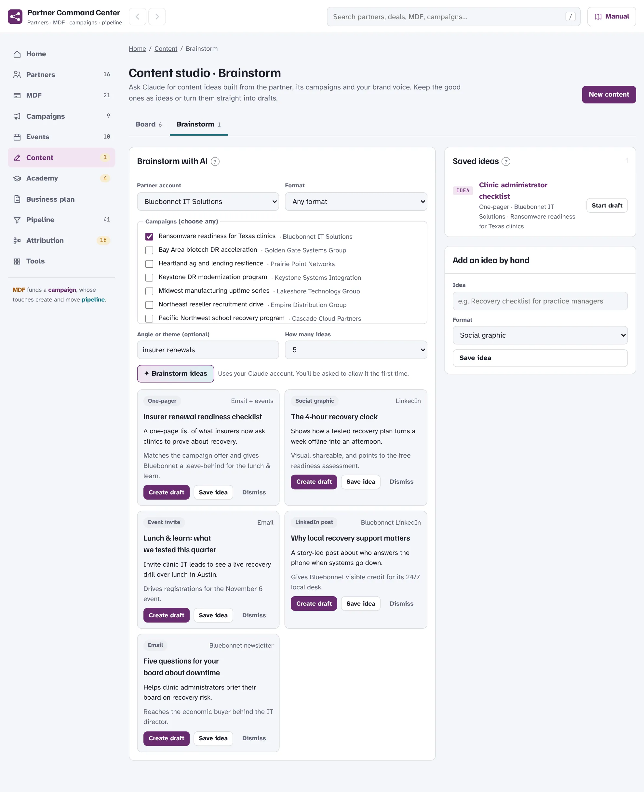
Figure 28 Content studio: brainstorming with AI Open this view ↗
1
Brainstorm with AI
Choose the partner account, a format if you want one, an angle and how many ideas. Claude uses the partner, the campaigns’ audience, offer and messaging, and your brand voice.
2
Campaigns
Tick one or more campaigns for Claude to build from. Ideas carry these campaigns with them.
3
Idea cards
Each idea has a format, channel, hook and why it fits. Create draft opens it as a draft; Save idea keeps it for later; Dismiss drops it.
4
Saved ideas
Ideas waiting to be written. Start draft moves one onto the board.
Pick the partner account, tick the campaigns, and optionally a format and an angle.
Select Brainstorm ideas. The first time, you’ll be asked to allow Claude for this page.
For each idea, select Create draft, Save idea or Dismiss.
Create and approve
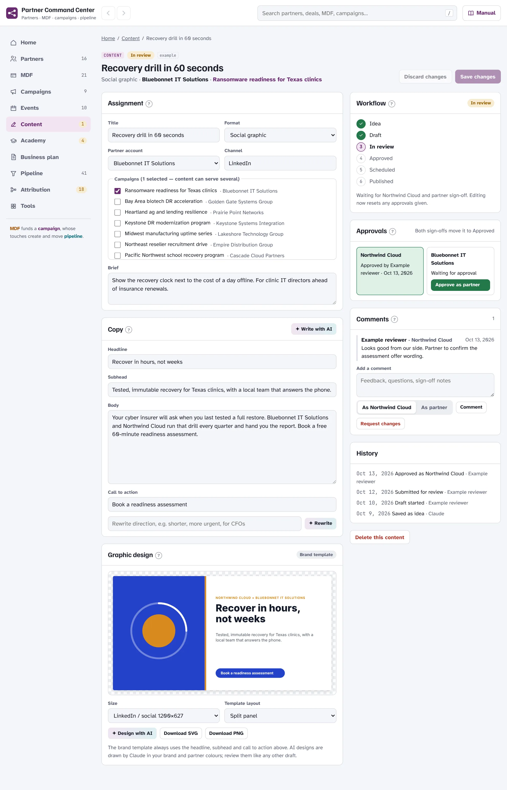
Figure 29 Content studio: writing, designing and approving one piece Open this view ↗
1
Assignment
Title, format, the partner account it belongs to, the channel, and every campaign it serves. Content can serve several campaigns at once.
2
Copy
Headline, subhead, body and call to action. Write with AI drafts from the brief; Rewrite takes a direction such as “shorter” or “for CFOs”. Nothing is kept until you select Save changes.
3
Graphic design
The brand template is always ready in three layouts and four sizes. Design with AI has Claude draw a custom co-branded graphic; Refine adjusts it; earlier designs can be restored; download as SVG or PNG.
4
Workflow
Idea → Draft → In review → Approved → Scheduled → Published. The button here always shows the next step.
5
Approvals
The vendor and the partner each sign off. When both have, the piece moves to Approved.
6
Comments
Comment as the vendor or the partner. Request changes sends the piece back to the author with your note.
How to Write and design a piece with AI Go there ↗
Open the draft. Check the partner, campaigns and brief under Assignment.
Select Write with AI, read the copy, and use Rewrite with a direction if needed.
Pick a size and layout for the brand template, or select Design with AI and then Refine.
Select Save changes. Claude never invents numbers; replace any [X] placeholders before review.
On a finished draft, select Submit for review. A partner and a headline or body are required.
Each side selects Approve as vendor or Approve as partner. Or write what needs fixing and select Request changes.
Once both approve, set a publish date and channel and select Schedule.
After it goes out, select Mark published. Editing the copy or design after review resets both approvals.
AI
AI writing and design use your own Claude account, and the first request asks you to allow it. Everything also works by hand: the brand template draws a finished graphic from your headline, subhead and call to action without AI.
Chapter 10
Business plan
Each partner has one joint business plan: why the partnership exists, a step-by-step onboarding and enablement playbook, goals that track themselves from the hub’s data, a brand guide, and ready-to-use logo graphics. A plan assistant sits beside it. You can ask it questions, attach files, or ask it to update the plan, and you approve every change it proposes.
Open Business plan in the side rail, or select Business plan on any partner page. When you’ve focused the hub on one partner, the plan opens on that partner. Otherwise, use the Partner menu at the top right.
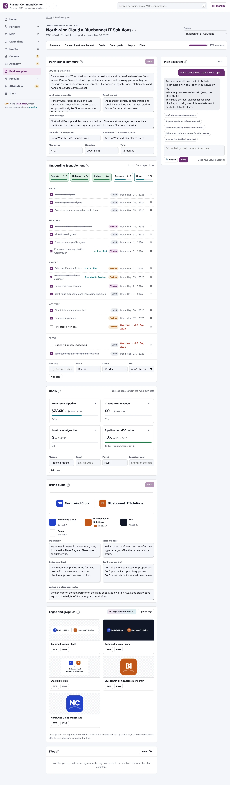
Figure 30 Business plan: one joint plan per partner Open this view ↗
1
Sections and completeness
Jump to any part of the plan. The bar shows how complete it is: summary fields filled, onboarding steps done, goals set and logos ready.
2
Partnership summary
Why the partnership exists, the joint value proposition, target market, joint offerings, a sponsor on each side, and the plan period. Edits show Unsaved until you select Save.
3
Onboarding and enablement
Sixteen standard steps across five phases: Recruit, Onboard, Enable, Activate and Grow. Each has an owner (vendor, partner or joint) and a due date counted from the day the partner joined. Tick steps as they finish; overdue steps turn red. Add your own steps at the bottom.
4
Goals
Pick a measure and a target. Pipeline, closed-won revenue, deals, pipeline per MDF dollar, campaigns, published content and certified people all update themselves from the hub. Use Custom goal for anything else.
5
Brand guide
The co-brand lockup preview, both brand colours (change the partner’s with the colour picker), typography, voice and tone, do’s and don’ts, and lockup rules.
6
Logos and graphics
Light, dark and stacked co-brand lockups plus both monograms, drawn from the brand colours. Download any of them as SVG or PNG, upload the partner’s own logo, or select Logo concept with AI.
7
Plan assistant
Chat about the plan. It can see the plan and the partner’s hub data. See the plan assistant below.
In Goals, choose a measure such as Pipeline registered or Certified people.
Enter the target (dollars for money goals), the period, and an optional label.
Select Add goal. Progress is calculated from the hub’s data each time you open the plan.
The plan assistant
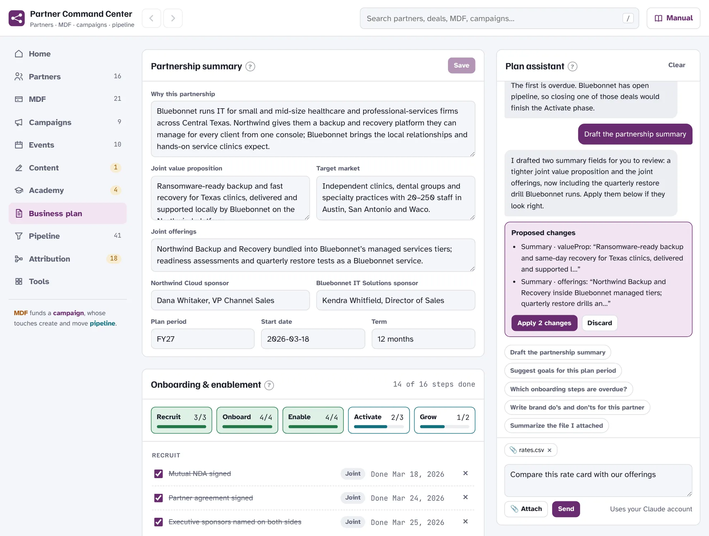
Figure 31 The plan assistant proposing changes for you to apply Open this view ↗
1
Conversation
Your questions and the assistant’s answers, kept with the plan so anyone on the account can pick up the thread. Clear starts over.
2
Proposed changes
When you ask the assistant to update the plan, it lists exactly what it would change. Apply saves them all; Discard drops them.
3
Quick requests
One-click prompts: draft the summary, suggest goals, find overdue steps, write brand do’s and don’ts, or summarize an attached file.
4
Message and attachments
Type a request and press Enter (Shift+Enter for a new line). Attach adds files; they’re stored in the plan’s Files and, if readable, sent to the assistant with your message.
How to Update the plan with the assistant Go there ↗
Type what you want, such as “Draft the partnership summary” or “Mark the kickoff meeting done”, or select a quick request.
Read the answer. If it proposes changes, check the list in the Proposed changes card.
Select Apply to save them, or Discard. Applied changes are noted under the assistant’s message.
In Files, select Upload file to store agreements, decks or price lists with the plan. In Logos and graphics, select Upload logo for the partner’s logo.
To have the assistant read a file, select Attach in the plan assistant, add a message, and send it.
Uploading needs edit access to the hub. Each file can be up to 20 MB; Word and Excel files can’t be stored, so save them as PDF or CSV first.
AI
The assistant uses your own Claude account and asks your permission the first time. It never changes the plan by itself: proposed changes wait in a card until you select Apply. Text files (TXT, CSV, Markdown, JSON) can be read by the assistant; images can be shown to it when your view allows; other files are stored with the plan but not read.
Chapter 11
Academy
The Academy is the hub's learning system. Build courses from reading, video, file and quiz lessons (or have Claude draft them), assign them to partner contacts with due dates, record progress lesson by lesson, grade quizzes, and award certifications with downloadable certificates. Certifications feed each partner's business plan and goals.
Partners don't log in to the hub, so progress is recorded here: you open an assignment and work through it with the learner, or mark it complete when they finish the same course elsewhere.
Published courses, the share of assignments completed, active certifications (and how many expire within 45 days), and overdue assignments.
2
Catalog, Learners, Certifications
Three views: every course, every person with training, and every certification awarded.
3
Filters
Show one track (Sales, Technical, Marketing, Onboarding), drafts or published courses, or search by name.
4
Course card
Track, whether it awards a certification, level, size and length, and how many of the people assigned have finished.
5
Create a course
Build a course with AI drafts modules, lessons and quizzes from a topic and optional source file. New course starts blank. Assign training sends a published course to partner contacts.
On Academy, select Build a course with AI. Describe what partners should learn, pick the track, level and number of modules, and optionally attach a text or Markdown file to teach from. Or select New course to start blank.
In the editor, rename modules and lessons, reorder them with the arrows, and add Reading, Video, File or Quiz lessons. Write this lesson with AI and Write questions from this module with AI fill in the content.
For each quiz question, select the circle beside the correct answer and add a one-line explanation.
Under Course details, set the pass mark, turn on a certification and its validity, and link a business-plan step if it applies.
Select Save course, then Publish. Nothing is visible to assign until the course is published.
Assigning and tracking
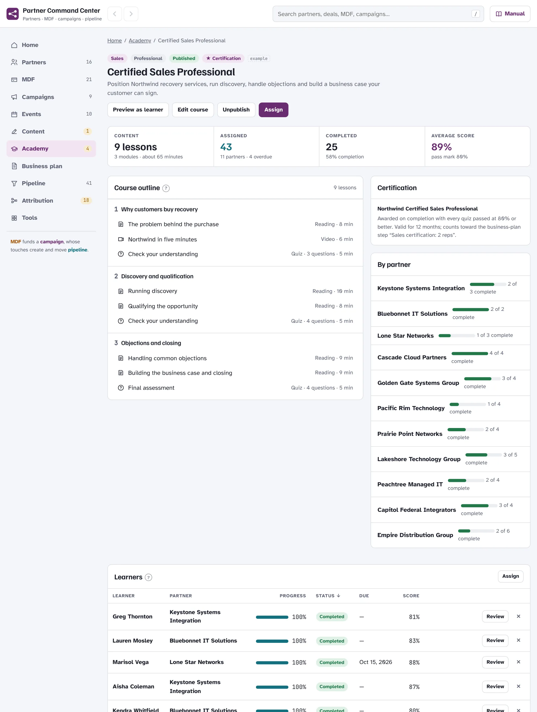
Figure 33 A course: outline, results and the people taking it Open this view ↗
1
Course actions
Preview as learner opens the course without saving progress. Edit course opens the editor. Assign sends it to more people; drafts must be published first.
2
Course outline
Modules and lessons in order, with type and length. Quizzes show how many questions they hold.
3
Course numbers
Lessons, people assigned (and overdue), completions, and the average quiz score against the pass mark.
4
Certification
The certification it awards, how long it stays valid, and the business-plan step it counts toward.
5
Learners
Each person assigned: progress, status, due date and score. Open player records progress; Mark complete records a course finished elsewhere; ✕ removes the assignment.
Select Assign on a course, Assign training on the Academy, or Assign in the Training panel of a partner or contact.
Choose the course, the partner and the people. People already assigned are greyed out. Select all picks everyone at that partner.
Set a due date (30 days by default) and select Assign. Overdue assignments appear in Needs attention on Home and in red on the Academy.
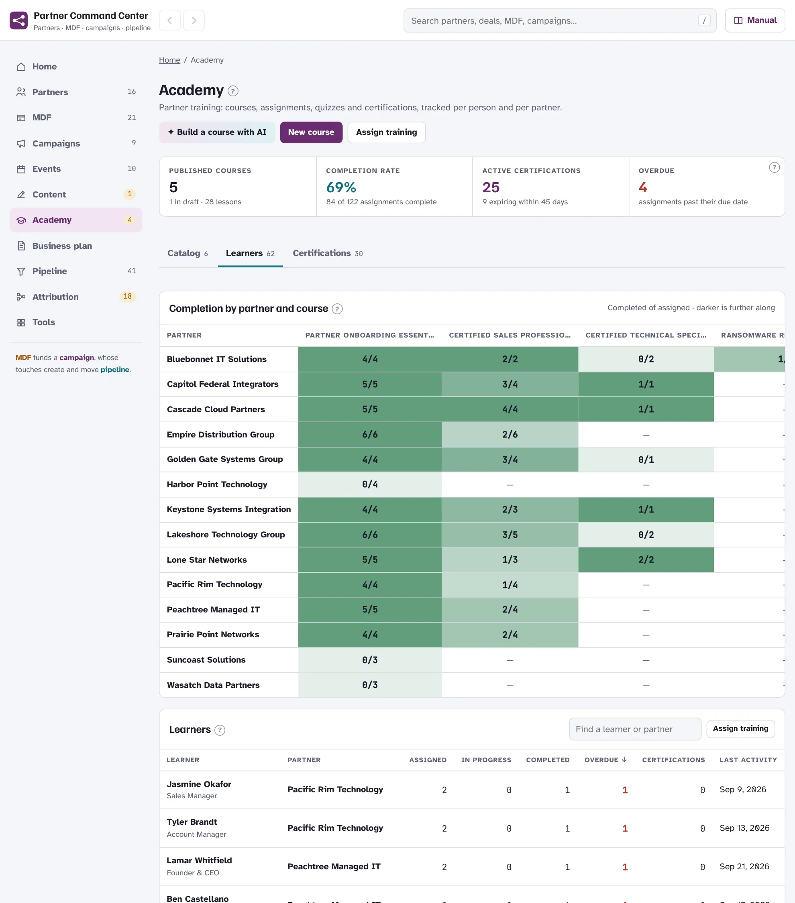
Figure 34 Learners: completion by partner and by person Open this view ↗
1
Completion by partner
For each partner and course, completed of assigned. Darker green means further along. Click a course name to open it.
2
Learners
Everyone with training, sortable by any column. It opens sorted by overdue assignments so the people who need a nudge come first.
Taking a course and earning a certificate
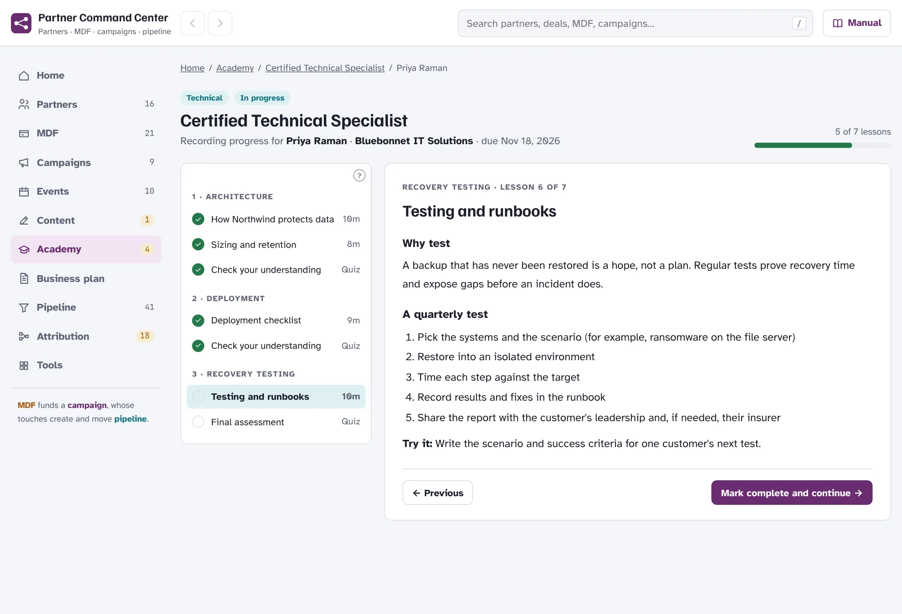
Figure 35 The lesson player, recording progress for one learner Open this view ↗
1
Lessons
Every lesson, grouped by module. A green tick means done; click any lesson to jump to it.
2
Who and when
The learner whose progress you are recording, their partner, and the due date.
3
Progress
Lessons completed out of the total.
4
The lesson
Reading, a video or file link, or a quiz. Quizzes are graded on submit, show the right answers with explanations, and can be retaken.
5
Next step
Mark complete and continue saves the lesson. After the last lesson the course is complete and, if it awards one, the certification is issued.
How to Record progress and issue a certificate Go there ↗
Open the assignment from the course's Learners table, the contact's Training panel, or the Academy.
Work through each lesson with the learner and select Mark complete and continue. For quizzes, choose the answers and select Submit answers; below the pass mark, select Retake.
After the last lesson the course is complete. If it awards a certification, the certificate appears with its ID and expiry date.
Select Download PNG or Download SVG to send it to the learner. Every certificate is listed under Academy → Certifications, where expiring ones are flagged 45 days ahead.
Tip
A course can count toward a business-plan step, such as “Sales certification: 2 reps”. The plan then shows how many people at that partner are certified, and the Certified people goal counts them automatically.
Chapter 12
Deals and touches
The deal page is where attribution starts. Add a touch whenever a deal was reached by an event, a campaign or an MDF-funded activity. Everything else in the hub is calculated from these touches.
Stage, plus whether marketing sourced the deal (the first touch came before the deal opened) or influenced it (every touch came later).
2
Deal facts
Amount and weighted value, close date with days remaining, date created, and touch count.
3
Marketing touches
Each row is one dated touch. It shows which campaign and MDF request the touch traces back to, and the share of credit it gets under each of the four models. The current model’s column is highlighted.
4
Add a touch
Choose Event, Campaign or MDF activity, pick the specific record, set the date and add a short note. Only this deal’s partner’s records are listed.
5
Open in the Pipeline Portal
Change the deal itself (amount, stage, next step) in the tool that owns it.
How to Record that a deal was touched by an event, campaign or MDF activity Go there ↗
Open the deal from Pipeline, from search, or from any table where its name appears.
Scroll to Marketing touches.
In Touch type, pick Event, Campaign or MDF activity. The second list then shows that partner’s records of that type.
Pick the record, set the date it happened, and add a short note such as “CFO attended”.
Select Add touch. Credit is recalculated straight away across the deal, its campaign, the MDF behind it and the Attribution page.
How to Remove a touch added by mistake
On the deal page, find the touch in the Marketing touches table.
Select Remove. The button turns red and reads Confirm remove.
Select it again within four seconds to remove the touch. If you wait longer, nothing changes.
Chapter 13
Attribution
Attribution answers one question: for each MDF dollar, how much pipeline came back? It shares each deal’s value among its touches using the model you choose, then rolls each share up to the campaign and the MDF behind it.
Choose how a deal’s value is shared between its touches. Your choice is remembered in this browser and applies everywhere in the hub.
2
Program totals
MDF committed, pipeline credited to marketing, pipeline per MDF dollar (select Change to set the target), and pipeline with no marketing touch at all.
3
Where the money went
Each band runs from an MDF request, through its campaign, to the deal outcome. Its width is credited deal value. Click any MDF or campaign node to open it. Untick the box to hide deals with no touch.
4
By campaign
Sourced, influenced and won pipeline per campaign, with its return.
5
By MDF request
Deals touched, pipeline, cost per deal and return for each request.
6
Reported vs attributed
Pipeline partners and event recaps report, checked against the deals linked here. Large gaps are worth a conversation with the partner.
The four models, on a real deal
Three Rivers Steel is an $86,000 deal opened on August 13. It has two touches: a click on the Keystone LinkedIn ad program (MDF) on September 8, then the Boston executive roundtable (event) on October 2. Both trace back to the Keystone DR modernization program campaign. Both touches came after the deal opened, so marketing influenced it rather than sourced it.
Model
How it splits credit
LinkedIn ads (MDF)
Boston roundtable (MDF)
Campaign
Linear
Equal share to every touch
$43,000
$43,000
$86,000
First touch
All credit to the earliest touch
$86,000
$0
$86,000
Last touch
All credit to the latest touch
$0
$86,000
$86,000
U-shaped
40% first, 40% last, 20% across the middle (with two touches, 50/50)
$43,000
$43,000
$86,000
Tip
Use First touch when asking “what starts deals?” and Linear or U-shaped when asking “what keeps them moving?”. When a touch is on a campaign rather than a specific event or MDF line, its credit is split across that campaign’s MDF requests in proportion to their amounts.
Reading return
Return = attributed pipeline ÷ MDF amount, shown as a multiple such as 16×.
Green means at or above your target (10× unless you change it); amber means below.
Open and closed-won deals count toward pipeline. Closed-lost deals are excluded from pipeline figures.
Unattributed is pipeline with no touch at all. A large figure there usually means touches are missing, not that marketing did nothing.
How to Prepare attribution numbers for a partner QBR Go there ↗
Open Attribution and compare Linear with First touch. First touch shows what started deals; Linear shows the steady contribution.
Open the partner page and note MDF used, attributed pipeline and return per dollar.
In Pipeline · Forecast, select only that partner in the filter to see their commit and best case.
In Pipeline · Engagement, check the score breakdown to spot where the relationship needs attention.
Copy the address bar on any page to share that exact view. The link only works for people the hub is shared with.
Chapter 14
Pipeline tabs
The Pipeline area has four tabs taken from the Pipeline Portal: Deals, Board, Forecast and Engagement. Each works on the hub’s linked records and has a link to the same view in the Portal. The partner filter at the top carries across all four tabs and the partner map. The Portal’s contact map is under Partners.
Q4 2026, Q1 2027, the next six months, or all dates. Open deals already past their close date count in the current period.
2
Forecast numbers
Commit is closed won plus Negotiation. Best case adds Proposal. Weighted applies each stage’s win rate to open deals. Set a quarterly target to see coverage.
3
By close month
Stacked by category, so you can see when the commit lands.
4
Categories
Deals and value per category, and the share with a marketing touch.
5
Needs attention
Open deals past their close date or stuck more than 30 days in one stage.
Quarterly forecast target: on Pipeline · Forecast, pick Q4 2026 or Q1 2027, select Edit (or Set) on the target tile, enter the dollar amount and select Save.
Return target (pipeline per MDF dollar): on Attribution, select Change on the Pipeline per MDF $ tile, enter a multiple such as 10 and select Save target. Green and amber colouring across the hub follows this number.
This year’s total MDF budget. The MDF page shows how much is committed against it.
2
Return target
Pipeline you expect per MDF dollar. Green and amber returns across the hub use it.
3
Brand voice
How AI drafts sound: messaging, event plans, content. Vendor name and colors are used on every co-branded piece.
Chapter 16
Weekly routines
A suggested rhythm. Fifteen minutes a day keeps attribution honest, which keeps the QBR numbers easy.
Every morning
Home: clear red items in Needs attention first
Decide on any MDF requests and deal registrations waiting
Route new leads and chase partners past their answer window
Add touches for yesterday’s events and calls
Every Monday
Pipeline · Board: move deals that changed stage
Pipeline · Forecast: check commit against target
Pipeline · Engagement: contact partners in Re-engage
Month end and QBRs
MDF: filter No campaign and link anything left
Attribution: review return by MDF request
Reconcile reported vs attributed gaps with each partner
Business plan: tick finished onboarding steps and review goals before the QBR
Academy: chase overdue training and plan renewals for expiring certifications
Chapter 17
Troubleshooting
The hub says “Program data needs a signed-in view”
Program data is stored with the hub on claude.ai. Open the hub while signed in to claude.ai. The Tools directory still works when you’re signed out.
“You have view access only, so this change was not saved”
The person who shared the hub gave you view access. Ask them for edit access from the hub’s Share menu.
A number in the hub doesn’t match the Pipeline Portal
The hub works from its own copy of deals and contacts, so changes made in the Portal since the last refresh won’t appear. Stage moves made on the hub’s Board also stay in the hub. Ask Claude to refresh the hub from the source tools.
A partner has a different name in another tool
The tools were set up separately. Open the partner page and look at Also listed as to see the name used in each tool.
A deal says “No touch” but marketing definitely worked it
Touches are added by hand. Open the deal and add the event, campaign or MDF activity that reached it (see Chapter 12). The deal moves out of Unattributed straight away.
An MDF request shows “Not run yet” for return
The activity hasn’t happened or hasn’t produced touches yet. Return appears once deals carry touches that trace back to it.
How do I replace the example records with my real program?
Ask Claude in this project to load your real partners, MDF, campaigns, events and deals into the hub. Example records are tagged so they can be cleared in one step.
Chapter 18
Glossary
MDF
Market development funds: money given to a partner to run marketing such as events, ads, content or telemarketing.
Touch
A dated record that a deal was reached by an event, a campaign or an MDF-funded activity. Touches are the basis of all attribution in the hub.
Attributed pipeline
Open and won deal value credited to marketing through touches, under the chosen model.
Unattributed
Deal value with no touch at all.
Sourced
The deal’s first touch came on or before the day the deal was created.
Influenced
Every touch on the deal came after it was created.
Return
Attributed pipeline divided by MDF spent, written as a multiple (16×).
Joint business plan
The plan you and one partner agree for a period (such as FY27): summary, onboarding steps, goals, brand guide and logos.
Certification
A credential awarded when someone completes a course that grants one, with every quiz passed. It has an ID and an expiry date.
Commit
Closed won plus deals in Negotiation.
Best case
Commit plus deals in Proposal.
Weighted
Closed won plus each open deal multiplied by its stage’s win rate.
Coverage
Open pipeline divided by the part of the quarterly target not yet won.
Engagement score
A 0–100 measure of how active a partner relationship is, built from contact recency, coverage, activity, deal registration and win rate.
Content stages
Idea, Draft, In review, Changes requested, Approved, Scheduled, Published.
Territory
The states a partner contact covers, shown on the map and the contact record.
Overlap
How your relationship with an account compares with a partner’s: Partner can introduce, Active co-sell, Bring the partner in, Expand together, Joint prospect or Whitespace.
Deal registration
A partner’s claim to a deal. Once approved, the partner is protected for a set number of days.
Lifecycle stage
Where a partner sits in its journey: Recruit, Onboard, Enable, Activate, Grow. Each stage has a four-item checklist.
Partner Command Center user manual · Version 1 · October 15, 2026. Screenshots show the example program.